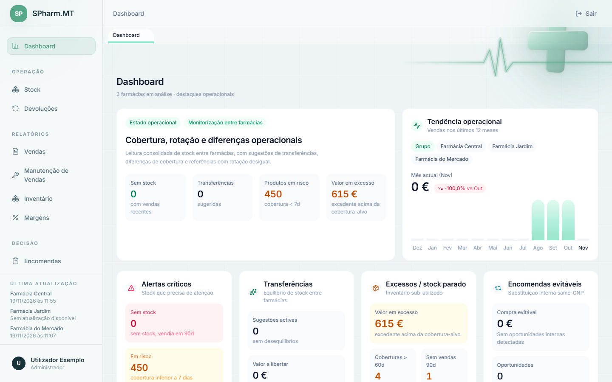
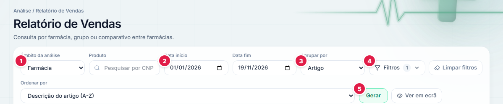
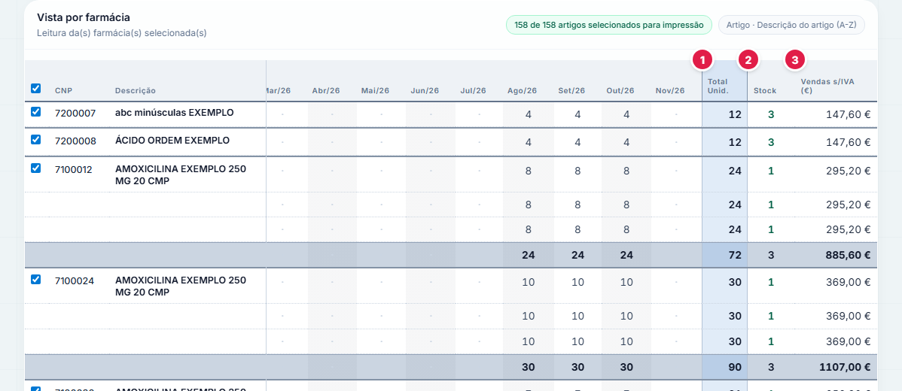
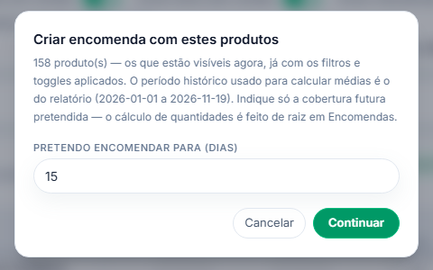

Protótipo visual: a numeração das páginas do índice é a prevista para o manual completo (cerca de 36 páginas); este documento mostra apenas páginas-tipo.
Veja, artigo a artigo, as unidades vendidas mês a mês, o stock atual e o custo estimado, para uma farmácia, várias ou o grupo todo.
Qualquer utilizador com sessão pode gerar o relatório de Vendas. Com o âmbito «Grupo», o botão «Criar encomenda com estes produtos» só está disponível ao Administrador e ao Gestor de grupo. Com os perfis Gestor de farmácia e Operador, o botão fica inativo.
Os filtros estão explicados no capítulo 13 e as opções de impressão, PDF, Excel e email no capítulo 12.
Abra Vendas no menu Relatórios. Os números vermelhos da Figura 5.1 correspondem aos passos.

Abaixo do formulário, cada opção liga-se e desliga-se com um clique. Estão ligadas por omissão: Apenas com vendas, Incluir stock sem vendas e Incluir totais. Estão desligadas: Incluir manutenção de vendas e Apenas artigos com PVP diferente entre farmácias.
Depois de gerar, aparece o resumo (linhas, unidades, valor, stock total, custo estimado e média diária) e a tabela com uma linha por artigo e farmácia, com uma coluna por mês.

Quando um artigo existe em mais de uma farmácia, a tabela mostra uma linha por farmácia e, a seguir, uma linha de total do artigo. O Total geral fica no fim da tabela.
Se o custo de um artigo não for conhecido, a tabela mostra «—» em vez de um valor. O resumo passa a indicar, por exemplo, «custo est. … (parcial · 1 sem custo)».
Depois de gerar, aparecem os botões Imprimir PDF Excel Email. Como funcionam está explicado, uma só vez, no capítulo 12.
Pode transformar o relatório numa proposta de encomenda sem voltar a escolher os produtos.
São enviados para a encomenda os produtos que estão visíveis nesse momento, já com os filtros e as opções aplicados. Antes de clicar, retire da lista o que não quer encomendar — por exemplo, com um filtro de fabricante.
A quantidade a encomendar é calculada no ecrã Encomendas, não neste ecrã. O período do relatório serve para calcular as médias de venda.

O campo Agrupar por só agrupa quando o Âmbito da análise está em Grupo. Com o âmbito em Farmácia, a tabela continua a mostrar uma linha por artigo.
Com o âmbito em Grupo:
Num grupo com 10 artigos só com categoria «Analgésicos», 10 artigos com categoria «Analgésicos» e subcategoria «Anti-inflamatórios», e os restantes sem classificação:
| Agrupar por | Linhas que aparecem |
|---|---|
| Grupo | Analgésicos (10 artigos) · Anti-inflamatórios (10 artigos) · Por Classificar (restantes) |
| Categoria | Analgésicos (20 artigos) · Por Classificar (restantes) |
A coluna Stock mostra sempre o stock atual, à data em que gerou o relatório, mesmo que o período escolhido seja antigo.